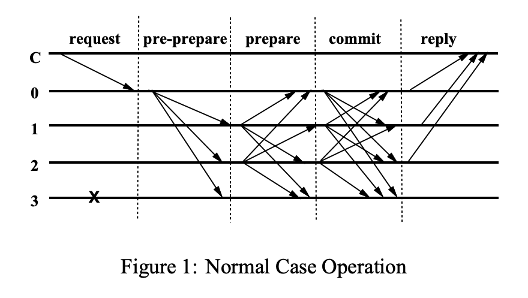

Practical Byzantine Fault Tolerance by Miguel Castro and Barbara Liskov
TLDR; one of the first state machine replication algorithms with an asynchronous system model that can tolerate Byzantine faults (although it has a weak synchrony assumption where all messages are guaranteed to be delivered after a certain time bound by using timeouts).
It can drive a consensus decision in two rounds of message exchanges.
- The first phase guarantees proposal uniqueness through the formation of a quorum certificate (QC) consisting of votes.
- The second phase guarantees that the next leader can convince replicas to vote for a safe proposal.
It offers both liveness and safety under the 33 percent Impossibility Result and only uses public-key cryptography during faults to prevent major speed bottlenecks (typically just uses signed message digests). This circumvents the FLP Result because it relies on a synchrony assumption to guarantee liveness, not safety.
For a faster alternative, consider SBFT (which provides a reduction from to normal-case communication and a best-case latency of only a single round of communication)
The primary of a view is replica such that where is the set of replicas. Note that this explicitly allows for faulty primaries while the algorithm properly handles.
The algorithm works as follows
- A client sends a request for operation to a node in the cluster:
- If a replica receives the request, it forwards it to the leader
- The primary multicasts the request to the backup nodes in a three-phase protocol. The pre-prepare and prepare phases are used to totally order requests sent in the same view even when the primary, which proposes the ordering of requests, is faulty
- Pre-prepare: mainly used to ensure request was assigned sequence number in view . Primary assigns a sequence number to the request and multicasts a pre-prepare message with digest :
- A replica accepts a pre-prepare message iff:
- It is in view
- is the digest for and the signature is correct
- has not seen a pre-prepare message with the same and with a different digest
- sequence number is between some and
- A replica accepts a pre-prepare message iff:
- Prepare
- If replica accepts the pre-prepare message, it enters the prepare phase by multicasting a
- We define a replica as prepared iff has in its log:
- The request
- A pre-prepare for in view with sequence number
- prepares that match the pre-prepare based on , , and
- Commit
- If we are prepared, we have supermajority agreement which means all honest replicas agree on the requests in view
- Replica multicasts
- Replicas accept commit messages and insert them in their log provided they are properly signed, the view number in the message is equal to the replica’s current view, and the sequence number is between and
- This phase ensures that if a message is considered committed locally, then it should have been committed for the cluster
- A message is considered committed locally on replica if it has a log entry indicating it has prepared with view and sequence number and has also accepted commits that match the pre-prepare for
- After a is considered committed locally and all with lower have been executed, executes and applies the state change (as we don’t assume ordered message delivery, keeping messages until ready is critical to ensuring message ordering)
- then sends a reply to the client:
- A message is considered committed on the cluster if for all in some honest replicas, it has a log entry indicating it has prepared with view and sequence number
- A message is considered committed locally on replica if it has a log entry indicating it has prepared with view and sequence number and has also accepted commits that match the pre-prepare for
- Pre-prepare: mainly used to ensure request was assigned sequence number in view . Primary assigns a sequence number to the request and multicasts a pre-prepare message with digest :
- The client waits for replies from different replicas with the same result; this is the end result
- If the client doesn’t receive replies in a timely manner, it broadcasts the request to all replicas. If the request has already been processed, the replicas simply re-send the reply (as replicas cache the last reply sent to each client)
Replica 0 is the primary, replica 3 is faulty, and C is the client
Garbage Collection
As we assume only asynchronous model, we can’t assume any unresponsive node won’t rejoin at some later point. So either, we need to keep all log entries around potentially forever (not idea), or have some way to transfer state between nodes (which requires nodes to prove correctness of state).
Generate state correctness proofs are expensive so only happen once every 100 sequence numbers (a stable checkpoint).
Proof generation:
- When a replica reaches a checkpoint, it multicasts a message where is the digest of the state
- A replica collects checkpoint messages until they have messages for the same sequence number and digest
- messages are the proof of correctness for the checkpoint
- A checkpoint with a proof means that the replica is safe to discard all log messages related to sequence number
Additionally, this checkpointing determines what the waterlevel and are
- is the sequence number of the last stable checkpoint
- where is generally twice the gap between stable checkpoints (e.g. 200)
View Changes
Similar to the concept of term changes and heartbeats in Raft
If the timer of replica expires in view , it can broadcast a message to move the system to view
- It stops accepting messages (other than checkpoint, view change and new view messages)
- Multicasts a to all nodes
- is the sequence number of the last stable checkpoint known to
- is the set of certificates for
- is a set of sets for each message with a sequence number higher than
- Each is the set containing
- A valid pre-prepare message for
- matching valid prepare messages from different replicas
- When the initiator of view receives valid view-change messages, it multicasts a new
- is the set of all received view-change messages along with the initial view-change message sent out
- is the set of pre-prepare messages computed as follows:
- min-s: latest stable checkpoint in
- max-s: highest sequence number in a prepare message in
- For each between min-s and max-s
- If there is some message in where the sequence number matches
- Create a new message
- If there isn’t
- Create a new message where is the digest of a noop request
- If there is some message in where the sequence number matches
- Leader appends all messages in to its log and enters view